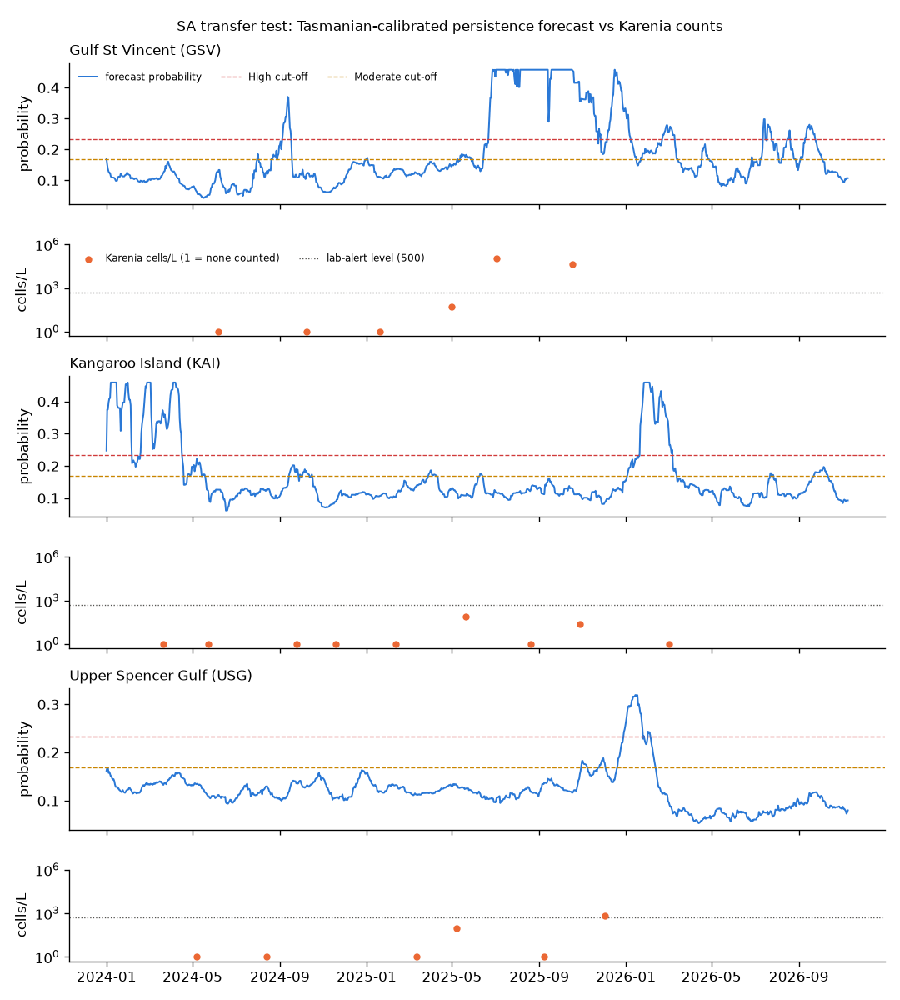
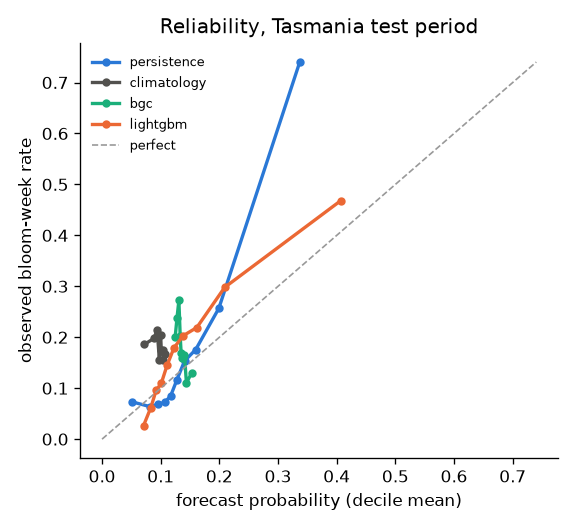

Model card: 7-day chlorophyll-a outlook (Tasmania)
Version: 1.1 deployed (Phase 4, 2026-11-18); evaluated as 1.0 (Phase 3) · Method: calibrated chlorophyll persistence · Code: pipeline/model/, pipeline/forecast/
Deployed vs. evaluated. The test results in section 5 are for version 1.0, calibrated on 2023 only. The live forecast (1.1,
models/forecast_tas.json) uses the same score, but its calibration and tier cut-offs were refit on 2023-01 to 2026-10 (D014, decision B), because 1.0 was under-confident in 2026. The deployed cut-offs are Moderate p ≥ 0.193, High p ≥ 0.356. No test-period result has been recomputed with 1.1, and none should be quoted for it.Experimental research tool. Indicates chlorophyll-a (algal biomass), not toxins or harmful species. Not a substitute for official harvest decisions by ShellMAP (Tasmania) or SASQAP (South Australia).
1. What it predicts
For each Tasmanian shellfish harvest area and each issue day t, the probability that the area's satellite chlorophyll-a will be unusually high over the next 7 days (t+1…t+7). It is shown as a Low / Moderate / High tier.
"Unusually high" means above that area's 90th percentile for that calendar month, measured against its own 2016–2022 normal (docs/target_definition.md). Partly cloudy days count less, in proportion to how much of the area was clear. A week meeting this definition is called a bloom week below. It is a satellite-biomass event, not a toxin event.
Chlorophyll is a proxy. A high-chlorophyll week is not necessarily harmful, and some toxic species (Alexandrium, Dinophysis) cause problems at low biomass without raising chlorophyll. Section 6 shows how weakly the proxy matched harmful-species counts at Maria Island.
2. Intended use and users
- For: aquaculture operators and interested public, as situational awareness ("conditions near my lease have been unusually green and are likely to stay so this week").
- Not for: harvest, closure or food-safety decisions; toxin prediction; areas outside the 57 Tasmanian harvest areas (South Australia is a transfer test only, section 7).
3. How it works
| Step | Detail |
|---|---|
| Input | Copernicus OLCI 300 m daily chlorophyll (L3, cloud-masked), pixels inside each harvest area + 2 km buffer |
| Score | Clear-sky-weighted mean chlorophyll anomaly over t−15 … t−2 (chl_anom_wmean14). The newest satellite data is ~2 days old at issue time. |
| Probability | Platt (logistic) calibration of the score, fitted on 2023 (validation) |
| No recent data | If there was no clear view for 14 days, use the area's 2016–2022 rate for that month, flagged stale_chl (0.7% of validation days) |
| Tiers | Moderate if p ≥ 0.170, High if p ≥ 0.233. Chosen on 2023 so that at most 20% / 5% of normal weeks are flagged. Deployed 1.1: 0.193 / 0.356, same rule on 2023-01 to 2026-10. |
Why persistence and not a machine-learning model? We built a tuned gradient-boosting model (LightGBM, 43 features: chlorophyll history, SST and marine heatwaves, mixed-layer depth and currents, ERA5 weather including the forecast week, season, area traits). In year-by-year tests on 2018–2023 it was significantly worse than persistence in 2 years, tied in 3 and better only in 2023. Even that win leaned on observed future weather, which a real forecast can't have (D013). The weather, ocean and season drivers added no consistent skill beyond recent chlorophyll, so we ship the simplest method that works. LightGBM is kept below as a documented comparison.
4. Data and splits
- Training 2016-04 → 2022 (baselines, thresholds, climatology). Validation 2023 (calibration, tiers, method choice). Test 2024-01 → 2026-11, scored once after everything was frozen (commit
d881905). - The last 7 days before each split boundary are removed from the earlier split, so a label never uses data from the next period.
- OLCI history: Copernicus version 202211, fully reprocessed to 2021 and "interim" from 2022 (D006).
5. Test results (Tasmania, 2024–2026)
All methods are calibrated the same way on 2023. Comparison rows are those where every method has a value (43,872 area-days, 2024-01-01 → 2026-09-29, because the BGC model record ends there). Bloom-week rate 18.1%. 95% intervals come from resampling whole weeks.
| Method | PR-AUC | Brier (lower = better) | Recall at 10% false alarms |
|---|---|---|---|
| Persistence (shipped) | 0.555 [0.464, 0.632] | 0.126 [0.111, 0.139] | 0.53 [0.45, 0.60] |
| Seasonal climatology (baseline 2) | 0.171 [0.147, 0.196] | 0.155 | 0.09 |
| Copernicus BGC model, perfect-forecast (baseline 3) | 0.152 [0.131, 0.176] | 0.150 | 0.07 |
| LightGBM (comparison; uses observed future weather) | 0.370 [0.293, 0.437] | 0.136 | 0.34 |
Random guessing scores a PR-AUC equal to the bloom-week rate (0.18). Persistence beats every baseline in the pooled test and in each test year.
By year: read this before the pooled numbers.
| Year | Bloom-week rate | Persistence | Climatology | BGC | LightGBM |
|---|---|---|---|---|---|
| 2024 | 0.117 | 0.172 [0.146, 0.207] | 0.115 | 0.124 | 0.162 |
| 2025 | 0.087 | 0.163 [0.112, 0.217] | 0.099 | 0.086 | 0.136 |
| 2026 (to Sep) | 0.388 | 0.792 [0.745, 0.830] | 0.358 | 0.354 | 0.671 |
2026 contains a long, widespread high-chlorophyll period: 39% of weeks positive (58% on the east coast), with positive spells lasting a median of 6 days. Persistence handles that naturally, and it dominates the pooled numbers. In ordinary years (2024, 2025) skill is modest: about 1.5–1.9× better than chance at ranking bloom weeks, in line with 2018–2023.
By sub-region (PR-AUC, persistence vs best other method): east coast 0.75 vs 0.51 (LightGBM); south-east bays 0.52 vs 0.33; D'Entrecasteaux / far south 0.38 vs 0.31; north and north-west 0.11 vs 0.15 (LightGBM better; persistence barely above the 0.08 rate). The north is the weakest region.
Tiers on test:
| Tier | Share of weeks | Weeks that were bloom weeks | Share of all bloom weeks caught |
|---|---|---|---|
| High | 12% | 73% | 46% |
| Moderate | 10% | 26% | 14% |
| Low | 78% | 10% | 41% |
On validation (2023) a High week was a bloom week only 30% of the time. The test figure is higher because of 2026.
Calibration: reliability is good up to p ≈ 0.2. Above that the forecast is under-confident in the test period: forecasts near 0.34 came true ~74% of the time (docs/img/phase3_reliability_tas.png). The 2023 calibration did not anticipate a year like 2026. Phase 4 should recalibrate on a rolling recent window.
Sensitivity: the drift-resistant trailing-baseline label gives the same picture (persistence 0.526, LightGBM 0.362, climatology 0.187, BGC 0.166).
6. Real-world check: harmful-species counts at Maria Island
IMOS NRS Maria Island (~monthly sampling) against the forecast for the 5 harvest areas within 40 km (Triabunna, Little Swanport, Boomer Bay), issued in the week before each visit, 2016-05 → 2026 (models/secondary_tas.json):
| Visits | Flagged Moderate or High | Flagged High | |
|---|---|---|---|
| Visits with a taxon above its ShellMAP lab-alert level | 22 | 64% | 36% |
| Visits without | 85 | 64% | 34% |
The forecast did not discriminate harmful-species events at this station. Mean probability was 0.23 before event visits and 0.24 before others, and the result is the same for high-biomass taxa only (Karenia, Pseudo-nitzschia, G. catenatum; 11 visits). Most Tasmanian events there are Alexandrium and G. catenatum, which can be toxic at low biomass. One station 25–40 km from the farms, sampled monthly, is also a weak test.
Official closures and Biotoxin News: the ShellMAP status archive started on 2026-11-18 (Phase 1), so closures can't be checked historically. Published outlooks are now compared daily with status changes and with Biotoxin News results on the Verification page (D016).
7. Out-of-region case study: the 2025 South Australian Karenia bloom
We applied the Tasmanian-calibrated forecast, without refitting anything, to 5 km circles around the three SA NRS stations, using each circle's own 2016–2022 chlorophyll baseline (models/sa_transfer.json, docs/img/phase3_karenia_sa.png).
- Gulf St Vincent: the forecast reached High on 22 June 2025 and stayed High or near the top through to November. It was High in the week before both samples above the lab-alert level: 113,000 cells/L on 3 July (first High 11 days earlier) and 43,800 cells/L on 17 October. Earlier samples below the alert level (May 2025, 50 cells/L) were not flagged.
- Upper Spencer Gulf: the one exceedance (650 cells/L, 2 December 2025) was preceded by a Moderate week, and the forecast peaked at High in late December.
- Kangaroo Island: no Karenia exceedances, but High periods in early 2024 and January 2026, which were either non-Karenia blooms or false alarms.
- Satellite-label skill transferred: PR-AUC 0.63–0.80 against bloom-week rates of 0.13–0.23.
Caveats: 6–9 samples per station since 2024, and the circles are not harvest areas. The early-warning claim rests on one bloom at one station. The forecast followed the bloom's onset within weeks; it did not predict it before any chlorophyll rise.
8. Known failure modes and limitations
- Chlorophyll is a proxy, and a weak one for low-biomass toxic species (section 6).
- Persistence can't anticipate a bloom's first appearance. It reacts once satellite chlorophyll has risen, so lead time comes from blooms lasting longer than the ~2-day data latency.
- Coastal satellite chlorophyll is optically contaminated. Absolute OLCI values in the harvest areas (median 7.5 mg m⁻³) are several times typical in-situ values, from tannins, sediment and land adjacency. Anomalies remove the fixed bias, but runoff after heavy rain can still read as a "bloom".
- Cloud. About a third of area-days have usable data. Long cloudy spells fall back to seasonal climatology (
stale_chl). - Satellite drift. Over Tasmania, OLCI, MODIS and VIIRS all show flat-to-falling surface chlorophyll since 2022 while the Maria Island ship fluorometer rises 2.5–5× (D006). Unexplained.
- Version change: the operational data (Copernicus 202611 family) reads ~10% lower than the history used here from 2022. Recalibration is needed when the history is replaced.
- Calibration drift: under-confident in 2026 (section 5).
- Weakest in the north / north-west.
9. Ethical and safety notes
The forecast must never be presented as a food-safety signal. Every map view and popup carries the disclaimer and a link to the official status pages. Probabilities are shown alongside the data's age and the stale_chl flag so users can judge freshness.
10. Data sources and licences
Copernicus Marine Service (OLCI chlorophyll, BGC model, OSTIA, GLORYS12); IMOS (NRS phytoplankton, CC BY 4.0); ERA5 via Open-Meteo (CC BY 4.0); NRE Tasmania ShellMAP (non-commercial licence with acknowledgement); theLIST harvest-area boundaries (licence pending; not published). Full details in docs/data_sources.md.
Figures
docs/img/phase3_karenia_sa.png

docs/img/phase3_reliability_tas.png
